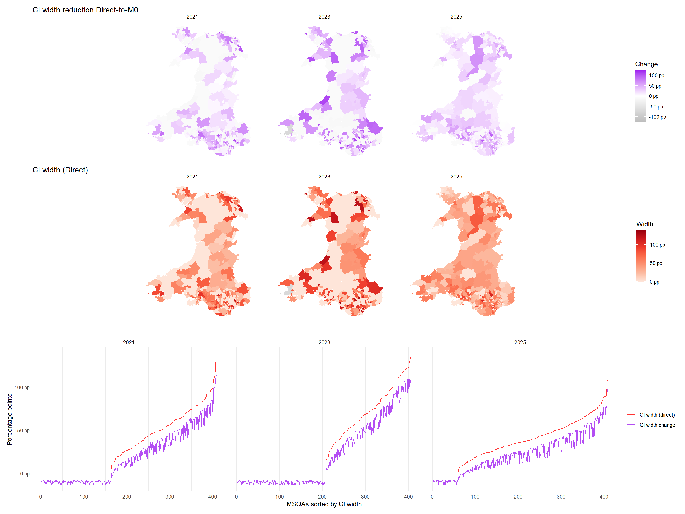
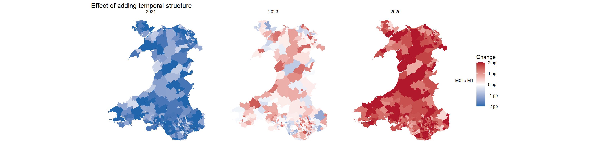
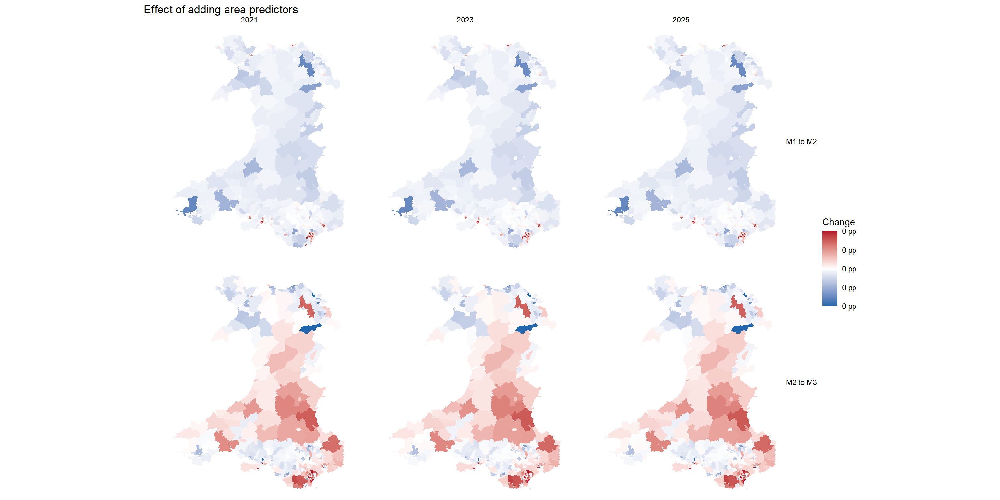
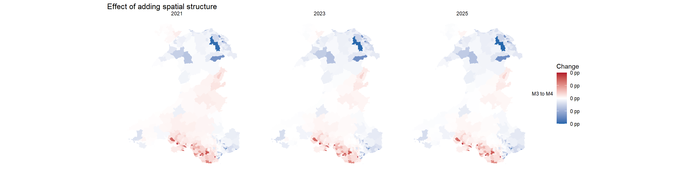

Bayesian Fay-Herriot models with area predictors, year effects, and spatial structure
Area-level SAE starts from the direct estimates created in the previous workbook. The Fay–Herriot model lets direct estimates for each MSOA–year borrow strength from predictors and spatial and temporal structures to stabilise noisy estimates of share of adults who walk for transport daily, by MSOA-year. The goal is to see what changes as we add more auxiliary information to the model
First we imported the direct estimates computed in the previous step, together with their sampling variances for all MSOA–year combinations. We will also load the prepared dataset of normalised area predictors for daily walking, from which the models will borrow strengths from to stabilise the estimates.
Before fitting the models, we create a consistent numeric index for each MSOA and survey year. These indices are used by INLA to attach random effects to the correct area and period.
Model M4 includes a spatial random effect, so we also need an adjacency graph .adj as INLA input. We use Queen contiguity, where two MSOAs are treated as neighbours if their boundaries touch at either an edge or a point. The boundary file is sorted using area_index so that the graph order matches the area IDs used in the modelling data.
We then assemble the modelling data. The models use two area-level random-effect structures, so we create separate INLA index variables:
area_iid_id indexes the unstructured, independent area effect.
area_spatial_id indexes the structured spatial area effect, which uses the adjacency graph.
The sampling variance also needs careful handling before fitting the FH models. Because the outcome is binary (1 for walking daily, 0 otherwise), small MSOA-year samples can produce direct estimates with very low, zero, or missing variance. If untreated, those would be treated as overly precise. To avoid this, we apply a minimum sampling-variance floor. For MSOA-year unit without a direct estimate, we assign a large variance value of 1, signalling high uncertainty.
sampling_variance_floor <-quantile( model_data_raw$variance[model_data_raw$variance >0],probs =0.05,na.rm =TRUE,names =FALSE)model_data <- model_data_raw |>left_join(area_index, by ="domain_id") |>left_join(year_index, by ="wave_year") |>mutate(area_iid_id = area_id,area_spatial_id = area_id,sampling_variance =case_when(# No direct estimate: treat as maximum uncertainty.is.na(direct_estimate) ~1,# Missing or tiny variances get the same lower bound.is.na(variance) ~ sampling_variance_floor,TRUE~pmax(variance, sampling_variance_floor) ) ) |>arrange(wave_year, area_id)head(model_data)
domain_id
wave_year
msoa_name
direct_estimate
standard_error
variance
direct_ci_width
n
cov_population_density
cov_share_no_car_households
cov_share_work_from_home
cov_share_students
cov_share_routine_semiroutine
area_id
year_id
area_iid_id
area_spatial_id
sampling_variance
W02000001
2021
Isle of Anglesey 001
0.0000000
0.0000000
0.0000000
0.0000000
6
-0.7385764
-0.6348996
-0.4925120
-0.2471960
0.0038108
1
1
1
1
0.0014392
W02000002
2021
Isle of Anglesey 002
0.4319654
0.2016562
0.0406652
0.7904923
9
-0.7435073
-1.0668381
0.6555194
-0.4337328
-0.8118926
2
1
2
2
0.0406652
W02000003
2021
Isle of Anglesey 003
0.1612313
0.1076960
0.0115984
0.4221684
11
0.3977772
1.4408027
-1.4693683
-0.1734198
1.5395405
3
1
3
3
0.0115984
W02000004
2021
Isle of Anglesey 004
0.1388181
0.1247829
0.0155708
0.4891491
14
-0.7200726
-1.1056552
-0.1801613
-0.2643614
-0.3159590
4
1
4
4
0.0155708
W02000005
2021
Isle of Anglesey 005
0.2357801
0.1253119
0.0157031
0.4912228
17
-0.7196659
-0.9291559
0.4069885
-0.3262651
-0.9374519
5
1
5
5
0.0157031
W02000006
2021
Isle of Anglesey 006
0.1008805
0.0744196
0.0055383
0.2917247
19
-0.6930287
-0.2053102
-0.8776878
-0.0929360
0.3234906
6
1
6
6
0.0055383
2 Fit Models
Each model uses the direct estimate as the response. The sampling variance from the direct-estimation workbook is passed to INLA as known observation-level uncertainty, so cells with noisy direct estimates receive less weight.
We will fit five cumulative models:
Model
Name
Specifications
M0
Baseline
Intercept plus independent MSOA random effect
M1
+Temporal
M0 plus year (random walk)
M2
+Core predictors
M1 plus population density and no-car households
M3
+All predictors
M2 plus economic activities (full-time students, semi-routine/routine occupation, WFH)
M4
+Spatial
M3 plus spatial structure (among MSOA adjacency)
First, we define the model specifications and fit each one to the direct estimates.
At this point the result is just a named list of fitted INLA models. We will collate the fitted values into one results table.
Code
# Main frame to keep from model dataoutput_cols <-c("domain_id","wave_year","msoa_name","direct_estimate","standard_error","direct_ci_width","n")model_output_frame <-select(model_data, all_of(output_cols))# Extract fitted values from each model and bind them to the framefh_result_tables <- purrr::map2( fh_fits,names(fh_fits),function(fit, model_name) { fitted_values <- tibble::as_tibble(fit$summary.fitted.values) model_results <-bind_cols(model_output_frame, fitted_values)transmute( model_results,model = model_name,across(all_of(output_cols)),fh_estimate = .data$mean,fh_ci_width = .data[["0.975quant"]] - .data[["0.025quant"]],has_direct =!is.na(.data$direct_estimate) ) })# Stack model outputs and set display orderfh_results <-bind_rows(fh_result_tables)fh_results <-mutate( fh_results,model =factor(.data$model, levels = model_order))head(fh_results)
model
domain_id
wave_year
msoa_name
direct_estimate
standard_error
direct_ci_width
n
fh_estimate
fh_ci_width
has_direct
M0 Baseline
W02000001
2021
Isle of Anglesey 001
0.0000000
0.0000000
0.0000000
6
0.0156917
0.0994671
TRUE
M0 Baseline
W02000002
2021
Isle of Anglesey 002
0.4319654
0.2016562
0.7904923
9
0.0787867
0.1343511
TRUE
M0 Baseline
W02000003
2021
Isle of Anglesey 003
0.1612313
0.1076960
0.4221684
11
0.0985257
0.1541044
TRUE
M0 Baseline
W02000004
2021
Isle of Anglesey 004
0.1388181
0.1247829
0.4891491
14
0.0097769
0.0994060
TRUE
M0 Baseline
W02000005
2021
Isle of Anglesey 005
0.2357801
0.1253119
0.4912228
17
0.1153944
0.1812385
TRUE
M0 Baseline
W02000006
2021
Isle of Anglesey 006
0.1008805
0.0744196
0.2917247
19
0.0445611
0.1058680
TRUE
3 Compare Models
We first examine what changes when we move from the direct estimates to the baseline FH model (Model 0). Model 0 has no covariates or spatio-temporal structure, but it does add an independent MSOA random effect. Its main role is therefore to stabilise the survey-weighted direct estimates through partial pooling.
MSOA-years with wide direct-estimate confidence intervals have noisier evidence about the local daily-walking share, so they receive less weight and are pulled more strongly towards the overall pattern. By contrast, MSOA-years with missing, zero, or near-zero direct-estimate variance can show a wider interval. This is because the posterior interval reintroduces uncertainty around the estimated share of adults walking daily where the direct survey evidence is weak.
Code
fh_wide <- fh_results |># One row per MSOA-year, with model outputs in separate columns.select( domain_id, wave_year, model, direct_ci_width, fh_estimate, fh_ci_width ) |>pivot_wider(names_from = model,values_from =c(fh_estimate, fh_ci_width),names_sep ="__" )direct_to_m0 <- fh_wide |># Positive values mean M0 has a narrower interval than the direct estimate.transmute( domain_id, wave_year, direct_ci_width,ci_width_change = direct_ci_width - .data[["fh_ci_width__M0 Baseline"]] )ci_width_change_limit <-max(abs(direct_to_m0$ci_width_change), na.rm =TRUE)direct_ci_width_limit <-max(direct_to_m0$direct_ci_width, na.rm =TRUE)direct_to_m0_map_data <- msoa_boundaries |>left_join(direct_to_m0, by ="domain_id")shrinkage_maps <-ggplot(direct_to_m0_map_data) +geom_sf(aes(fill = .data$ci_width_change), colour ="transparent") +facet_wrap(vars(.data$wave_year), nrow =1) +scale_fill_gradient2(low ="grey",mid ="white",high ="purple",midpoint =0,limits =c(-ci_width_change_limit, ci_width_change_limit),labels = pp_label,na.value ="grey85",name ="Change" ) +labs(title ="CI width reduction Direct-to-M0") +theme_void()direct_ci_width_maps <-ggplot(direct_to_m0_map_data) +geom_sf(aes(fill = .data$direct_ci_width), colour ="transparent") +facet_wrap(vars(.data$wave_year), nrow =1) +scale_fill_distiller(palette ="Reds",direction =1,limits =c(0, direct_ci_width_limit),labels = pp_label,na.value ="grey85",name ="Width" ) +labs(title ="CI width (Direct)") +theme_void()direct_to_m0_ranked <- direct_to_m0 |>filter(!is.na(ci_width_change)) |>group_by(wave_year) |># Rank within each wave by the original direct-estimate CI width.arrange(direct_ci_width, .by_group =TRUE) |>mutate(ciwidth_rank =row_number()) |>ungroup() |>select( wave_year, ciwidth_rank,`CI width change`= ci_width_change,`CI width (direct)`= direct_ci_width ) |>pivot_longer(cols =-c(wave_year, ciwidth_rank),names_to ="measure",values_to ="value" )direct_to_m0_ranked_plot <-ggplot( direct_to_m0_ranked,aes(x = .data$ciwidth_rank,y = .data$value,colour = .data$measure )) +geom_hline(yintercept =0, colour ="grey60") +geom_line(alpha =0.8) +facet_wrap(vars(.data$wave_year), nrow =1) +scale_y_continuous(labels = pp_label) +scale_colour_manual(values =c("CI width change"="purple","CI width (direct)"="red" )) +labs(title ="",x ="MSOAs sorted by CI width",y ="Percentage points",colour =NULL ) +theme_minimal()shrinkage_maps / direct_ci_width_maps / direct_to_m0_ranked_plot +plot_layout(heights =c(1, 1, 1))

When Models 1-4 are compared with Model 0, posterior interval widths increase slightly overall. However, the interval-width comparison is not the whole picture. The later models may still improve the analysis by changing where we estimate higher or lower rates of daily walking among adults.
Adding temporal structure in Model 1 produces the clearest change from Model 0.
Model 0 has no temporal effect, so each MSOA receives the same fitted area value in every wave as pooled means from all 3.
Model 1 adds a year random-walk effect, allowing the estimated share of adults walking daily to vary between survey waves more realistically. In these results, since M1 estimated that the rate of daily walking increases chronologically on average, 2021 estimates are shifted downward, and 2025 upward to reflect that increase over time.
Code
plot_estimate_change_map( step_map_data,"M0 to M1","Effect of adding temporal structure", estimate_change_limit)

Next, we add area predictors cumulatively over Models 2 and 3.
Model 2 adds population density and the share of households without access to a car. Substantively, these predictors help distinguish places where daily walking for transport is more plausible from places where car-based travel is more dominant. The resulting changes raise the estimated daily-walking share in several more urban parts of south Wales and lower it in more rural areas, especially parts of the south west and north.
Model 3 then adds predictors related to economic activity and work patterns: full-time students, routine or semi-routine occupations, and working from home. These variables further recalibrate the geography of daily walking. Some southern urban areas continue to move upward, and there are also upward changes in parts of central Wales. Other areas, including pockets in the north and suburban south, move downward once the fuller predictor set is included.
Code
plot_estimate_change_map( step_map_data,c("M1 to M2", "M2 to M3"),"Effect of adding area predictors",0.005)

Finally, Model 4 adds spatial structure via an MSOA adjacency matrix. After accounting for the year effect and area predictors, neighbouring MSOAs can still share residual information about daily walking, smoothing local differences of areas with similar unexplained patterns. The resulting changes again emphasise the contrast between parts of the urban south and more rural areas.
Code
plot_estimate_change_map( step_map_data,"M3 to M4","Effect of adding spatial structure",0.005)

4 Final Model
Model 4 is the most structured model, combining the year random walk, the selected area predictors, and the spatial effect to estimate the share of adults who walk for transport daily in each MSOA-year. The final maps show higher estimated daily-walking shares in several southern Welsh urban areas, with lower values across many more rural and suburban areas.
Even after the direct estimates have been stabilised through the FH model, some MSOA-years still have wide posterior intervals (up to 30 percentage points). The final estimates should therefore be reported alongside their interval widths so that downstream operations can distinguish areas with similar estimated daily-walking rates but very different levels of uncertainty. A common strategy is to codify the resulting uncertainty into quality flags to facilitate filtering.